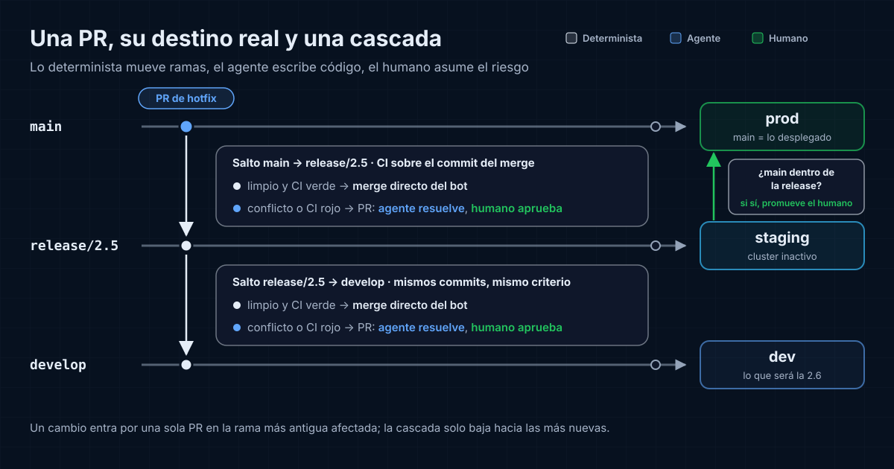

El fix que desaparece
Supón un servicio backend con tres ramas largas y agentes de código abriendo PRs a diario. La 2.4 está en producción, la 2.5 en staging y develop acumula la 2.6. Un agente arregla un bug de producción en main, pero el fix no llega a release/2.5 ni a develop, y nadie lo nota hasta promocionar la 2.5: el fix desaparece de producción, el bug vuelve y hay que rehacerlo.
Con un fix de staging que no llega a develop pasa igual: la regresión aparece una release después. Con agentes el problema crece, porque hay más PRs, más ramas vivas y más fixes en vuelo. El diseño que propongo reparte el trabajo: lo que mueve ramas es determinista, lo que escribe código es del agente y lo que asume riesgo es humano. Es una propuesta de diseño y el ejemplo es hipotético.
Tres ramas, tres entornos
Cada rama larga tiene su entorno: develop va a dev, release/x.y a staging y main a producción. Staging es el cluster inactivo de un despliegue blue-green, donde la release se prueba con la infraestructura real antes de mover el tráfico (lo conté en Blue-green con estado).
La regla es build once, deploy many: la imagen validada en staging es la que llega a producción, sin recompilar. Después, main avanza por fast-forward hasta la release. Así main es siempre lo que hay en producción y un hotfix parte del código que está fallando.
Ese fast-forward solo es posible si la release contiene todo main. Si un hotfix no llegó a la release, no se puede, y esa señal se convertirá en bloqueo.
Una PR, su destino real
Regla única: un cambio entra por una PR en la rama más antigua a la que afecta y desde ahí se propaga solo hacia las más nuevas. Bug en producción: PR a main. Bug que solo existe en staging porque lo introdujo la 2.5: PR a release/2.5. Features y fixes de lo que aún no ha salido: develop.
Se acaba la PR duplicada a mano por rama: tres revisiones del mismo cambio, tres commits que git no relaciona y la posibilidad de que uno se quede sin mergear.
Elegir main es declarar un hotfix, y eso lo decide un humano: es tocar producción fuera de ciclo. El agente lo propone con su diagnóstico (dónde aparece el bug y desde qué versión).
Cinco formas de propagar
Falta decidir cómo llega el cambio a las ramas más nuevas. Hay cinco opciones:
| Opción | A favor | En contra |
|---|---|---|
| Manual (GitFlow clásico) | Sin herramientas. | Depende de que alguien se acuerde. |
| Backport por cherry-pick | Propaga en paralelo. | N copias con SHAs distintos. |
| Upstream first | develop nunca se queda sin el fix. |
Latencia alta hasta producción. |
| Cascada con PR | Mismos commits; cada resolución se hereda. | PRs de bot en la lista. |
| Merge directo en cascada sin PR | Sin ruido de PRs. | Sin CI sobre el resultado antes del merge. |
En GitFlow, quien cierra un hotfix lo mergea a mano en master y en develop (o en la release abierta, como prevé Driessen): justo el paso que se olvida.
El backport lo automatizan bots como korthout/backport-action: etiquetas la PR mergeada y el bot abre una PR por rama destino con los commits cherry-pickeados. Son copias con SHA propio: git no sabe que son el mismo cambio (git branch --contains no las encuentra) y cada una resuelve sus conflictos por separado. Para un backport real, a una release antigua mantenida, es la herramienta correcta.
Upstream first invierte el sentido: el fix entra en develop y se cherry-pickea hacia la release y main. El fix llega tarde a producción y se escribe sobre un código distinto del que falla.
En la cascada, al mergear en main una automatización mergea main en la release y la release en develop. Son los mismos commits: un conflicto se resuelve una vez por salto y la rama siguiente hereda la resolución. Tres hotfixes seguidos viajan en una sola PR por salto.
Algunas plataformas traen integrado el merge directo en cascada sin PR: al mergear la PR original, mergean hacia las ramas más nuevas y, si un salto tiene conflicto, la cadena para y se abre una PR para ese salto. Sin ruido, pero un merge limpio entra sin compilar.
Un matiz: entre backport y cascada con PR, el número de PRs es parecido. La cascada gana en otra cosa: un commit por cambio, una resolución por conflicto y trazabilidad. Propongo un híbrido: merge directo si el salto es limpio y el CI previo sale verde; PR de cascada si hay conflicto o CI rojo.
La cascada en la práctica
Al mergear en main o en una release, una GitHub Action:
- Crea una rama temporal,
cascade/main-to-release-<sha>, con el merge demainsobre la release. - Lanza el CI sobre ese commit. Limpio no es correcto: si
developrenombró una función que el hotfix llama por su nombre viejo, git mergea sin conflictos y el build falla. - Si sale verde, el bot hace push a la rama destino, sin PR, como una merge queue de un elemento: si el destino se movió mientras corría el CI, rehace el merge y vuelve a probar.
- Si hay conflicto o CI rojo, abre una PR de cascada desde la rama temporal, nunca con
maincomo head: la resolución se commitearía enmain.
La GitHub App del bot es el único bypass actor de la regla de PR obligatoria en el ruleset. Personas y agentes siguen entrando por PR.
Las PRs normales van con squash; la cascada, siempre con merge commit. Con squash, la release recibiría un commit sin main como ancestro: git no vería el fix como mergeado y las ramas divergirían.
Falta la puerta de promoción. Antes de mover el tráfico a la 2.5, un check ejecuta git merge-base --is-ancestor main release/2.5, que devuelve 0 solo si todo main está en la release. Si falla, no se promociona: "la cascada no llegó a tiempo" pasa a ser "no se puede desplegar".
Latencia y conflictos
La cascada es secuencial. Si el salto de main a la release se bloquea con un conflicto esperando aprobación, develop no recibe el fix y sigue divergiendo, y cuanto más tarda, más conflictos acumula.
Mitigaciones: la cascada arranca al mergear, no en un cron. Si el salto a la release lleva unas horas bloqueado, se propaga de main a develop directamente; con merges es seguro, porque son los mismos commits y el salto posterior de la release a develop no los duplica (con cherry-pick no saldría limpio). Cada cascada abierta tiene plazo con alerta y el agente resuelve el conflicto al aparecer.
Pero una PR de cascada con conflicto resuelto por el agente pierde el auto-merge y exige aprobación humana (CODEOWNERS o una etiqueta obligatoria) en cada salto con conflicto. Es la PR que nadie mira, y una mala resolución se propaga sola hasta develop.
Las migraciones piden regla propia. Una V42 del hotfix en main y otra V42 en develop chocan en la cascada; numerarlas con timestamp lo evita, aunque según la herramienta habrá que permitir migraciones fuera de orden. Y un hotfix que toca el esquema respeta expand/contract, porque se despliega con el otro cluster leyendo la misma base de datos.
Skills para lo que pide criterio
El reparto:
| Quién | Qué hace |
|---|---|
| Determinista (Actions y rulesets) | Nombre y base de rama según el tipo, cascada, merge directo con CI previo, check de promoción, corte de release, versión, tags y changelog (release-please o similar, desde conventional commits). |
| Agente (skills de feature, fix y hotfix) | Implementar con un test que reproduzca el bug, conventional commits, descripción de PR, migraciones compatibles, resolver conflictos de cascada, proponer hotfixes. |
| Humano | Clasificar un hotfix, aprobar las PRs con conflictos resueltos por IA, promover a staging y a producción. |
Las skills cubren lo que pide criterio: qué test reproduce el bug o cómo resolver un conflicto sin perder ningún cambio. Lo que es regla va en una Action, que no se olvida: lo verificable se comprueba en CI, no en instrucciones, como en las puertas deterministas y las normas del equipo.
Lo que el agente no debe hacer (mergear, push a ramas protegidas, crear tags) lo impiden los permisos de su token y los rulesets, no una frase en la skill. Una instrucción se puede ignorar; un permiso que no tienes, no.
¿Y trunk-based?
En trunk-based, main hace de develop, las release/x.y se cortan de main y producción es un tag. Una rama larga menos y apenas cascada: los fixes van a main y se cherry-pickean a la release, y aquí sí es backport real. A cambio, lo que no está listo entra tras feature flags. El propio Driessen añadió en 2020 una nota a su post: con entrega continua, mejor un flujo más simple. Cambiaría cuando haya feature flags maduros y ninguna release pase días en staging.
Conclusión
Con agentes hay más cambios en vuelo que personas pendientes de propagarlos. El diseño cabe en tres reglas: cada cambio entra una vez, en la rama más antigua afectada; una cascada determinista lo lleva a las más nuevas, directa si el CI sale verde y con PR si no; y ninguna release se promociona sin contener main. El agente escribe y resuelve conflictos. El humano decide qué es un hotfix, aprueba lo que resolvió la IA y mueve el tráfico.
Fuentes
- Vincent Driessen, "A successful Git branching model", enero 2010, con la nota de reflexión de marzo 2020.
- Trunk Based Development, "Branch for release".
- korthout/backport-action, GitHub.
- GitHub Docs, "Creating rulesets for a repository" (bypass list).
- GitHub Docs, "Managing a merge queue".
- GitHub Docs, "Automatically merging a pull request".
- GitHub Docs, "About code owners".
- Git, "git-merge-base" (
--is-ancestor). - googleapis/release-please, GitHub.